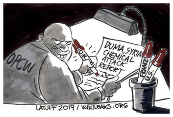
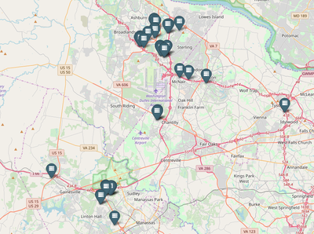

Over 17,000 documents from HazteOir and CitizenGO, Spanish right-wing campaigning organizations. Their links to Spain's far-right political party Vox and the Mexican sect El Yunque are well documented. These documents include HazteOir founding CitizenGo in 2013 to expand their reach, as well as their organzing of the 2012 World Congress of Families, an influential American far-right platform.
Today WikiLeaks releases documents pertaining to the Fishrot case that have come to light as a result of investigation into bribes, money laundering and tax evasion. These investigations have been launched by several institutions across Norway, Iceland and Namibia as a result of WikiLeaks' Fishrot publication earlier this month.
Today WikiLeaks releases more internal documents from the OPCW regarding the investigation into the alleged chemical attack in Douma in April 2018.

Documents released by WikiLeaks today shed light on a power struggle within the highest offices of the Catholic Church. Amongst the documents is a private letter written by Pope Francis. The existence of this letter, addressed to the papal envoy Cardinal Raymond Burke, has been the source of much speculation in the media [1]. It is now published for the first time in full and with the Pope’s signature.
Today, 21 December 2018, WikiLeaks publishes a searchable database of more than 16,000 procurement requests posted by United States embassies around the world.
Today, 11 Oct 2018, WikiLeaks publishes a highly confidential internal document from the cloud computing provider Amazon.